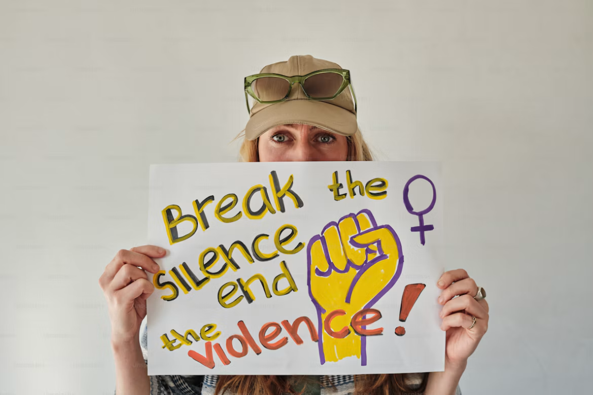

Kolum · Filipino
Ipaglaban ang Karapatan, Wakasan ang Pang-aabuso

Paano kung ang taong magliligtas sa’yo ay siya pala ang mananakit sa iyo? Hanggang kailan matatakot ang kababaihan bago sila makaramdam ng kaligtasan? Hindi kailanman dahilan ang pananamit upang abusuhin ang sinuman. Kailangang ituro sa paaralan at tahanan ang paggalang sa katawan at karapatan ng bawat isa.
Ang seksuwal na pang-aabuso sa kababaihan ay isang seryosong suliraning panlipunan na lumalabag sa dignidad, kalayaan, at karapatang pantao. Hindi lamang pisikal na sakit ang naidudulot nito kundi pati matinding takot at trauma. Maaari itong mangyari sa paaralan, tahanan, trabaho, at maging sa internet. Kabilang dito ang hindi gustong paghipo, pagsipol, pamimilit sa seksuwal na gawain, at iba pang kilos na walang pahintulot. Sa kabila ng mga batas na naglalayong protektahan ang kababaihan, may mga biktima pa ring natatakot magsumbong dahil sa panghuhusga ng ibang tao.
Hindi dapat balewalain ang isyung ito dahil maraming kababaihan ang nakararanas ng trauma at pananakit. Walang sinumang babae ang dapat makaranas ng ganitong pang-aabuso, anuman ang kaniyang pananamit o kilos. Dapat nating palawakin ang ating pang-unawa at iwasang manghusga. Bigyan natin ng katarungan ang mga biktima; nararapat lamang na managot ang mga taong nang-abuso sa kanila. Bilang bahagi ng lipunan, tungkulin nating ipagtanggol ang mga biktima at tiyaking mayroon silang ligtas na lugar upang magsalita at humingi ng tulong.
Dapat tugunan at labanan ang seksuwal na pang-aabuso sa kababaihan sa pamamagitan ng pagpapalawak ng kaalaman tungkol sa pahintulot at mga karapatan, at pagbibigay ng sapat na suporta at proteksiyon sa mga biktima. Makakatulong ang mga hakbang na ito upang maiwasan ang patuloy na pang-aabuso at maisulong ang katarungan.
Una, ang seksuwal na pang-aabuso sa kababaihan ay paglabag sa karapatang pantao at dignidad. Walang sinuman ang may karapatang manghipo o pumilit sa babae na gawin ang mga bagay na labag sa kaniyang kalooban. May karapatan ang bawat babae na tumanggi sa mga bagay na hindi niya gusto.
Ikalawa, mahalagang magkaroon tayo ng sapat na kaalaman tungkol sa isyung ito upang maiwasan ang pang-aabuso. Sa pamamagitan ng edukasyon sa komunidad at tahanan, dapat nating matutuhan ang kahalagahan ng paggalang sa kababaihan at sa personal na hangganan ng bawat isa.
Ikatlo, bigyan natin ng suporta at katarungan ang mga biktima. Iparamdam natin sa kanila na ligtas silang magsumbong at humingi ng tulong, lalo na dahil marami ang natatakot sa panghuhusga at paninisi. Dapat managot ang mga nang-aabuso dahil lumalabag sila sa batas at upang maiwasan ang pag-uulit ng ganitong krimen.
Ang paglaban sa pang-aabuso ay hindi lamang responsibilidad ng kababaihan kundi ng buong lipunan. Dapat isinasagawa ang paggalang sa kababaihan, hindi lamang ipinapahayag. Mahalaga ito upang maprotektahan ang kanilang karapatan, kaligtasan, at dignidad. Magkaisa tayo upang wakasan ang pang-aabuso at bumuo ng lipunang walang takot at karahasan.